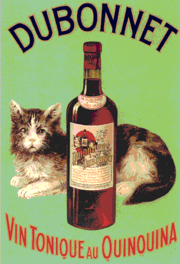

The bottle label includes a cat and a bottle,
with a label that includes a cat and a bottle,
with a lable that includes a cat and a bottle,
and so on
The limit of this process is a single point, not a fractal.

Return to
Things that look like fractals but aren't
.